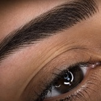
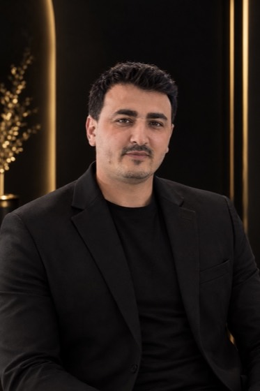
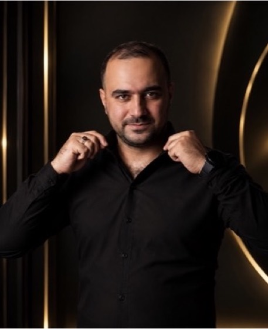
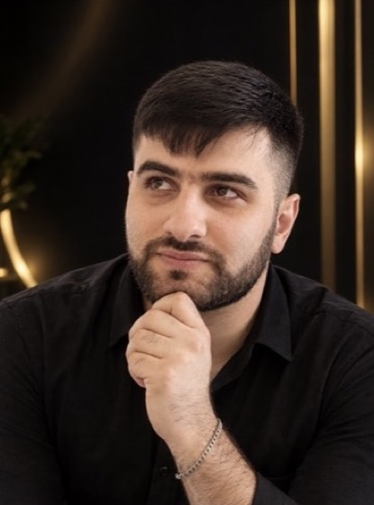

Qaşlar
Mikroblading nədir və nə qədər qalır
Mikroblading qaşlara əl ilə, incə tük xətləri şəklində piqment vurulan yarımdaimi texnikadır. Nəticə öz qaş tüklərinizə bənzəyir: qaş daha sıx və formalı görünür, amma süni təsir yaratmır.

Prosedura necə keçir
Hər şey konsultasiyadan başlayır. Usta üzünüzün ölçülərinə görə qaşın formasını cızır, rəngi dərinizin və saçınızın tonuna uyğun seçir. Forma sizə tam xoş gələndən sonra iş başlayır.
- Konsultasiya və qaş formasının eskizi
- Piqment rənginin seçilməsi
- Dərinin keyidilməsi
- Əl alətilə incə tük xətlərinin çəkilməsi
Prosedura adətən 2–3 saat çəkir. Dəqiq müddəti ustanız konsultasiyada deyəcək.
Ən vacib mərhələ formadır. Qaşı üzün ölçülərinə görə qururuq — ona görə hər müştərinin qaşı fərqli olur.
Nəticə nə qədər qalır
Mikroblading adətən 1–2 il qalır. Müddət dərinizin tipindən, günəşə nə qədər çıxdığınızdan və qulluqdan asılıdır. Yağlı dəridə piqment bir qədər tez solur, quru dəridə isə daha uzun qalır.
Sağalma və korreksiya
İlk günlərdə qaşlar gözlənildiyindən tünd görünür — bu normaldır, rəng sağaldıqca yumşalır. Əmələ gələn qabıqları qoparmaq olmaz: piqment onlarla birlikdə çıxa bilər.
Sağalmadan sonra korreksiya edilir: usta piqmentin zəif tutduğu yerləri tamamlayır. Korreksiyanın vaxtını ustanız sağalmanın gedişinə görə təyin edəcək.
Kimlərə uyğun deyil
Hamiləlik, emizdirmə dövrü, qaş nahiyəsində dəri iltihabı və bəzi xroniki xəstəliklər zamanı prosedura təxirə salınır. Sizə uyğun olub-olmadığını konsultasiyada dəqiqləşdirin — usta sağlamlığınızla bağlı sual verəcək.
Mikroblading, yoxsa nanobrows?
Hər iki texnika təbii tük effekti verir. Mikroblading əl aləti ilə, nanobrows isə aparatla aparılır. Hansının sizə uyğun olduğunu dərinizin tipinə görə usta tövsiyə edəcək.
Tez-tez verilən suallar
Mikroblading ağrılıdırmı?
Prosedura öncəsi dəri keyidilir, ona görə əksər müştərilər yalnız yüngül narahatlıq hiss edir.
Mikrobladingdən sonra nə vaxt yuyunmaq olar?
İlk günlərdə qaşları islatmamaq tövsiyə olunur. Dəqiq qulluq qaydalarını ustanız prosedura günü verəcək.
Mikroblading nə qədər qalır?
Adətən 1–2 il. Müddət dəri tipindən, günəşdən və qulluqdan asılıdır.
Korreksiya nə vaxt edilir?
Sağalma başa çatandan sonra. Vaxtı ustanız sağalmanın gedişinə görə təyin edəcək.

Bu məqalədəki xidmət Microblading 18 usta · 3 salonMicroblading edən ustalar
- Elşən İmaməliyevAF MallQeydiyyat

Vəli AbbaslıİnşaatçılarQeydiyyat
Emil BabayevNeftçilərQeydiyyat
Surac AğayevAF MallQeydiyyat